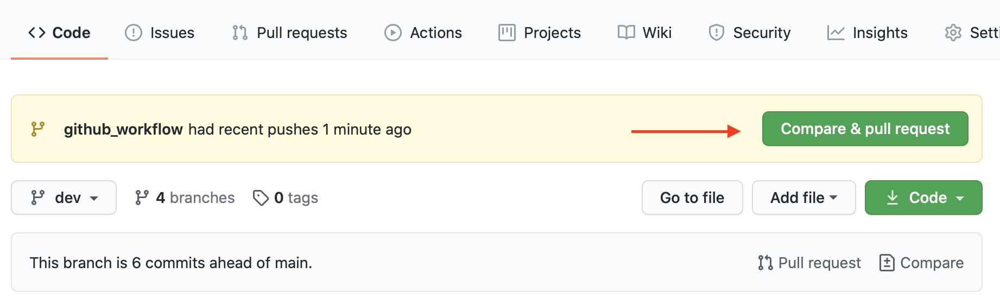
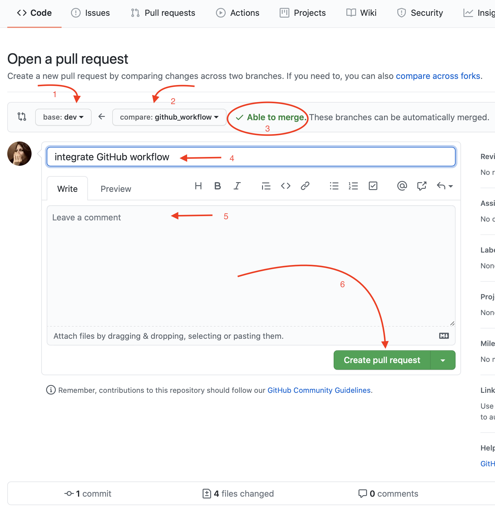
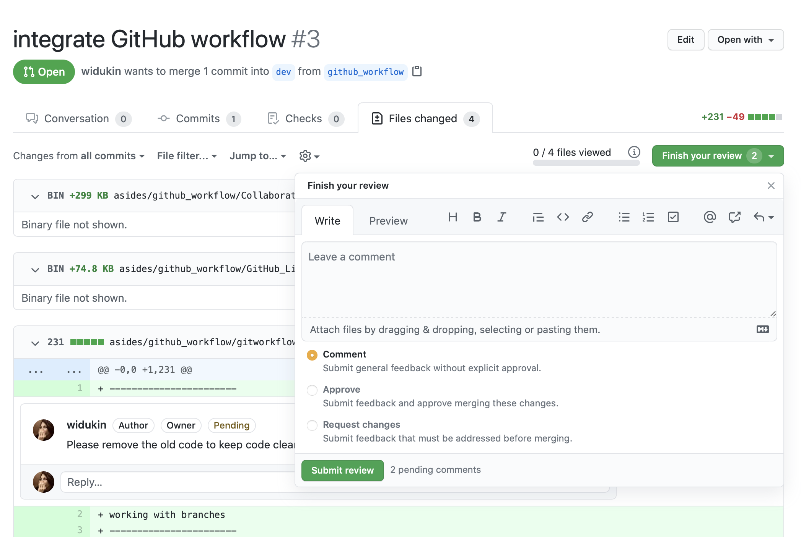
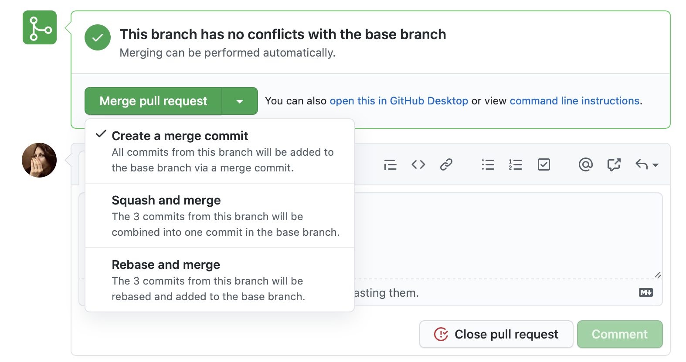
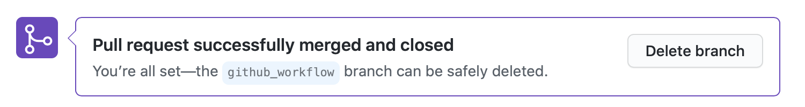

GIT | GITHUB WORKFLOW
Getting started (Admin)
The initial Github and Git setup for the group project
-
Create a repository on Github
-
Clone the repository to your local System
$ git clone [provided url on github]
-
Creating a developement branch locally
$ git checkout -b [dev_branch_name]
-
Creating initial files or other initial changes to the repo
$ touch index.html
$ touch style.css
$ git add .
$ git commit -m "first commit"
-
Pushing the dev branch to remote
No pulling is needed because there is no code yet.
$ git push origin [dev_branch_name]
-
Add your Team members as contributors on Github
 Adding Contriburos
Adding Contriburos
Getting started (Contributors)
The initial setup for project contributors
-
Copy the project link on Github
 Copying the Github Link
Copying the Github Link
-
Clone the github repository to your local System
$ git clone [copyed url on github]
-
Make sure to be in the initial branch
It should be the default branch (usually main/master).
Either your git bash shows the branch you're on or you can call the git branch command and look for the branch with the ascerist (*).
$ git branch
-
Creating a developement branch locally
$ git checkout -b [dev_branch_name]
Daily Workflow
Creating a new feature, implementing changes, fixing bugs.
-
Update your local development branch
$ git checkout [development_branch_name]
$ git pull origin [development_branch_name]
-
Creating a working branch locally
$ git checkout -b [work_branch_name]
-
Assure your are working on your working branch
$ git branch
You should see all existing branches and your working branch with an ascerist *
-
Doing some work
$ git add.
$ git commit -m "a good commit meassage"
-
After finishing your work push it to Github
$ git push origin [work_branch_name]
Your working branch with all your changes is on Github now.
-
Create a Pull Request
Make a new Pull Request on Github choosing the development branch as base and your working branch as the one to be compared with.
Resolve conflicts!
Give a meaningful title like "integrate feature xyz". Please no redundant information. Give it an good description as well. Add pictures as well.
Add reviewers to your PR.

New Pull Request

Open the Pull Request
Handle the Pull Request
Merging should be a team approach.
-
Review
The assigned Reviewers do their review comments and approve or request changes on the PR.

Review the Pull Request
-
Implement the required changes
Follow the daily workflow steps.
-
Merge the Pull Request

merge the Pull Request
-
Delete your remote working branch

Deleting the remote working branch
-
Delete your local working branch
$ git checkout [development_branch_name]
$ git branch -d [working_branch_name]
-
Update the state of your local repo
$ git fetch -p
making remote branches visible to the console
$ git branch -r
making local and remote branches visible to the console
$ git branch -a
Merging development branch with the main branch
-
Create a pull request from the development branch to the main branch on github
-
Add Reviewers
-
Reviewing Process
-
Merge PR
Do not delete the development branch!